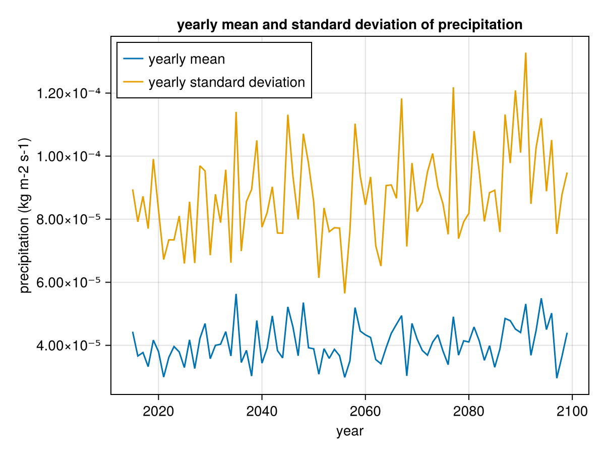

Loading climate data
This example shows how to use the CFTime package with CMIP6 data in the NetCDF format following the CF Conventions.
The CMIP6 example data is from NOAA-GFDL and data extracted at a single point as provided by the R package CFtime. The data is downloaded automatically.
This example can also be downloaded as a Julia source file example_CMIP6.jl.
using NCDatasets, CFTime, Dates, Statistics
using Downloads: downloadDownload the sample data and open the NetCDF file
url = "https://github.com/R-CF/CFtime/raw/1509a2387a92bda8500d1d6ac472b36df3575b56/inst/extdata/pr_day_GFDL-ESM4_ssp245_r1i1p1f1_gr1_20150101-20991231_v20180701.nc"
fname = download(url);
ds = NCDataset(fname);Get the global attribute Conventions
ds.attrib["Conventions"]"CF-1.7 CMIP-6.0 UGRID-1.0"Get the calendar and units attribute of the variable time
calendar = ds["time"].attrib["calendar"]
units = ds["time"].attrib["units"]
(calendar,units)("noleap", "days since 1850-01-01")Load the raw data representing the number of days since 1850-01-01 with the no-leap calendar and decode the data. The variable time is a vector of DateTimeNoLeap
data = ds["time"].var[:];
time = CFTime.timedecode(data,units,calendar);Since CFTime is integrated in NCDatasets, this transformation above is handled automatically by using:
time = ds["time"][:];Load the precipitation which is a variable of size 1 x 1 x 31025
pr = ds["pr"][1,1,:];
pr_units = ds["pr"].attrib["units"];
close(ds);Check that the time resolution of the datasets is 1 day (and constant).
@assert all(time[2:end]-time[1:end-1] .== Dates.Day(1))Verify that the time series spans entire years (otherwise the yearly statistics would be biased)
@assert Dates.dayofyear(time[1]) == 1
@assert Dates.dayofyear(time[end]) == 365Get all unique years and compute mean and standard deviation per year
years = unique(Dates.year.(time));
pr_yearly_mean = [mean(pr[Dates.year.(time) .== y]) for y in years];
pr_yearly_std = [std(pr[Dates.year.(time) .== y]) for y in years];Plot the result
using CairoMakie
fig = Figure()
ax = Axis(fig[1, 1],
xlabel = "year",
ylabel = "precipitation ($(pr_units))",
title = "yearly mean and standard deviation of precipitation")
lines!(ax, years, pr_yearly_mean, label = "yearly mean")
lines!(ax, years, pr_yearly_std, label = "yearly standard deviation")
axislegend(ax, position = :lt)